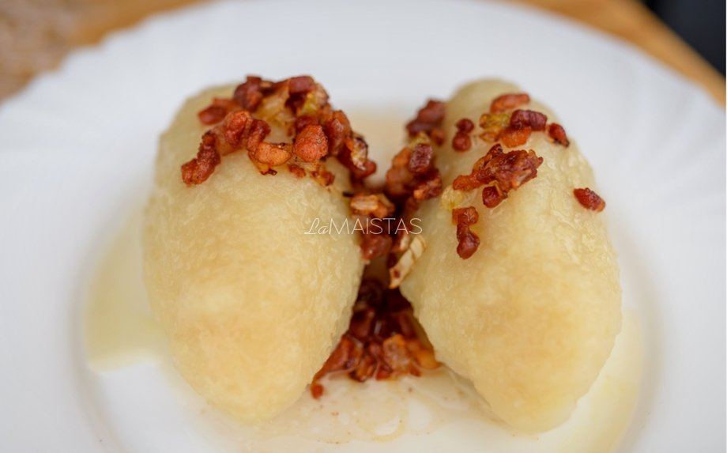

Cepelinų su mėsa receptas

Ingredientai
- 12 žalių bulvių
- 3 virtos bulvės
- Šiek tiek druskos
Įdarui:
- 500 gramų faršo
- 1 svogūnas
- Šiek tiek druskos
- Šiek tiek juodųjų pipirų
Padažui:
- 1 svogūnas
- 2 šaukštai tirpintų taukų
- Šiek tiek spirgučių
- Šiek tiek grietinės
Paruošimo būdas
- Nuskustos bulvės sutarkuojamos ir nusunkiamos.
- Skystis neišpilamas, bet laukiama, kol nusės krakmolas. Tada skystis nupilamas, o krakmolas sudedamas į tarkius.
- Virtos bulvės sugrūdamos ir sumaišomos su žalių bulvių tarkiu, krakmolu, pasūdoma, gerai išminkoma.
- Įdarui pakepinamas smulkintas svogūnas. Malta mėsa maišoma su kepintu svogūnu, druska ir pipirais.
- Imama maždaug po 80 g tešlos, išplojama, uždedama įdaro, paplotis sulenkiamas, kraštai gerai užspaudžiami ir daromi pailgi kukuliai.
- Jie dedami į verdantį pasūdytą vandenį ir verdami 20 — 25 minutes, atsargiai pamaišant.
- Padažui riebaluose kelias minutes pakepinami spirgučiai, tuomet sudedami smulkinti svogūnai, pakepinami dar kelias minutes, tuomet supilama grietinė.
- Išgriebti iš vandens cepelinai sudedami į pašildytą pusdubenį ir užpilami padažu.
Arsenijus Zubkovas